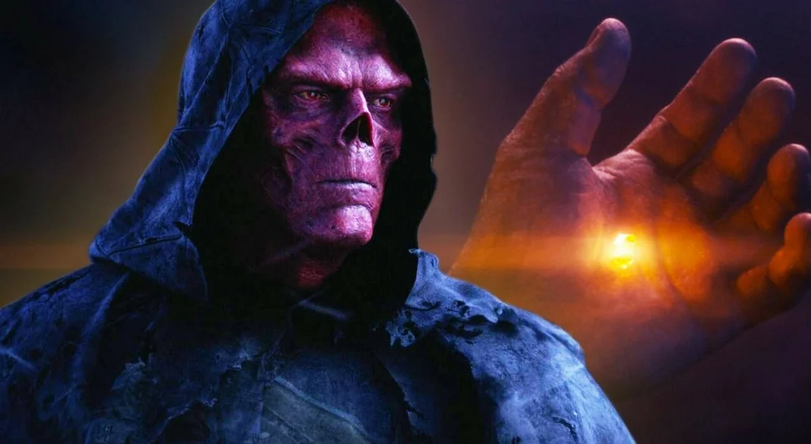

Камни души
 - один из шести камней бесконечности,
остаток сингулярности, который предшествует Вселенной. Возможно опаснейший из всех, этот камень обладает
разумом и испытывает голод, утолить который могут только души.
Он позволяет своему владельцу похищать, подчинять и изменять души живых или мёртвых. Как ни странно, камень
является вратами в идиллическую карманную вселенную.
- один из шести камней бесконечности,
остаток сингулярности, который предшествует Вселенной. Возможно опаснейший из всех, этот камень обладает
разумом и испытывает голод, утолить который могут только души.
Он позволяет своему владельцу похищать, подчинять и изменять души живых или мёртвых. Как ни странно, камень
является вратами в идиллическую карманную вселенную.
Камни души

появляется в фильме «Мстители: Война бесконечности». Он находился на планете Вормир под охраной Красного
Черепа, перемещённого туда при помощи Тессеракта в фильме «Первый Мститель». Ещё до событий первых «Стражей
Галактики» его нашла Гамора, но скрыла это от Таноса. Завладевший тремя камнями Танос, угрожая убить Небулу,
выпытывает у Гаморы местонахождение камня. Прибыв туда вместе с Гаморой, Танос узнаёт, что получить камень
может лишь тот, кто пожертвует тем, кого любит. Со слезами он убивает Гамору, после чего получает камень. В
фильме «Мстители: Финал» Воитель, Небула, Чёрная вдова и Соколиный глаз отправляются в 2014 год (события
фильма «Стражи Галактики») за Камнем души и Камнем силы. Чёрная вдова и Соколиный глаз летят на Вормир, где
узнают от Красного черепа о том, что чтобы получить камень, одному из них нужно умереть. Клинт и Наташа
начинают спорить и драться, поскольку и он и она желают умереть потому что оба потеряли тех кого любили,
сохранив жизнь напарнику. В итоге Чёрная вдова погибает, а Соколиный глаз получает камень.
На Главную